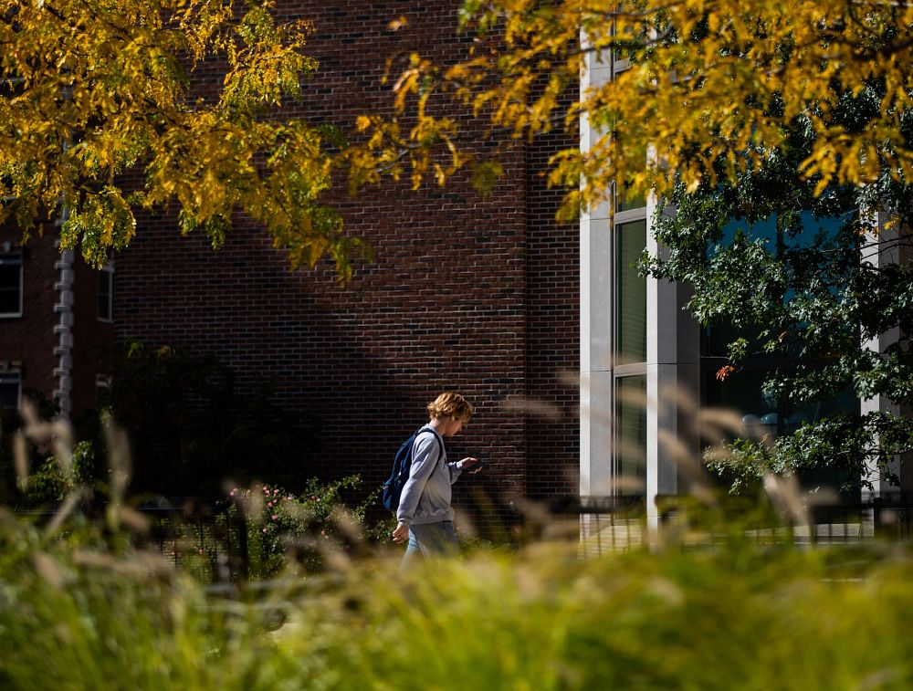
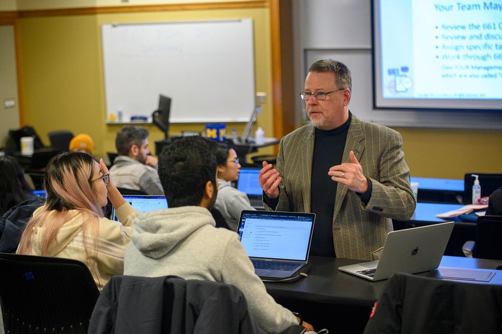
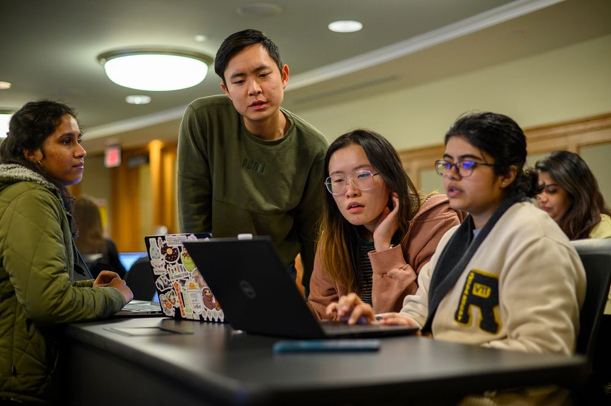
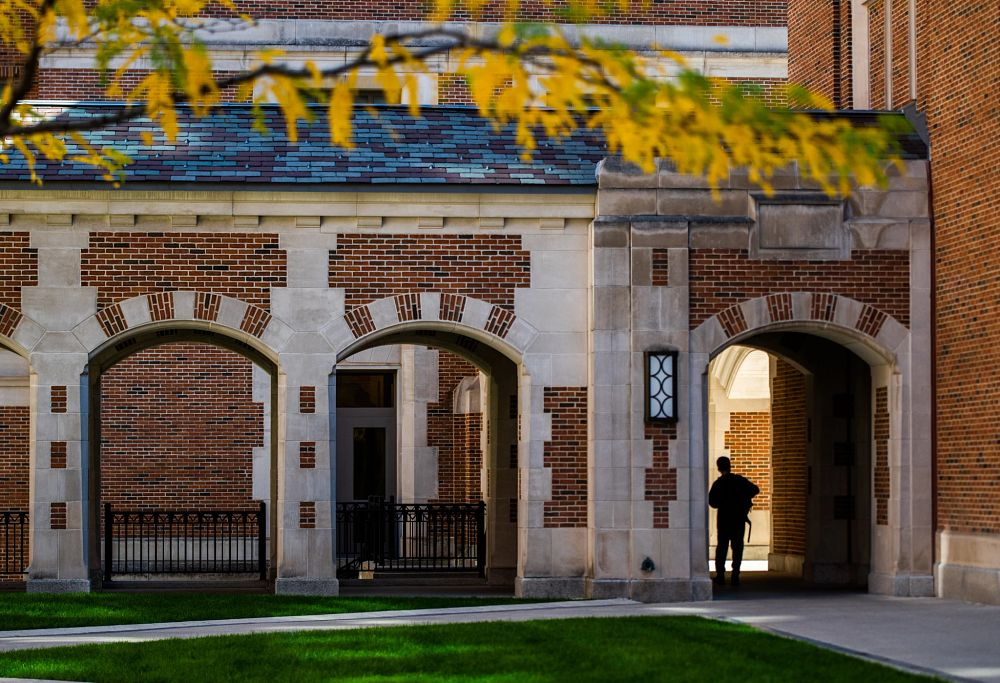
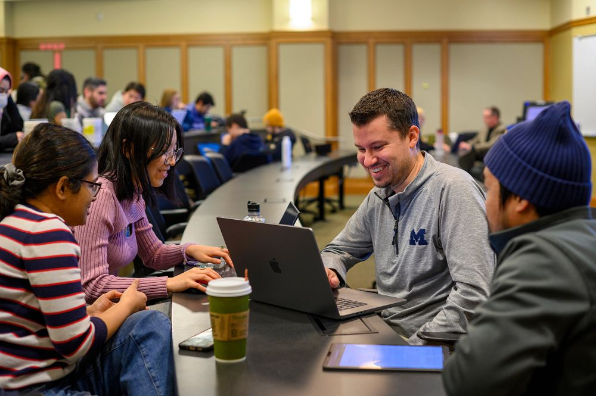
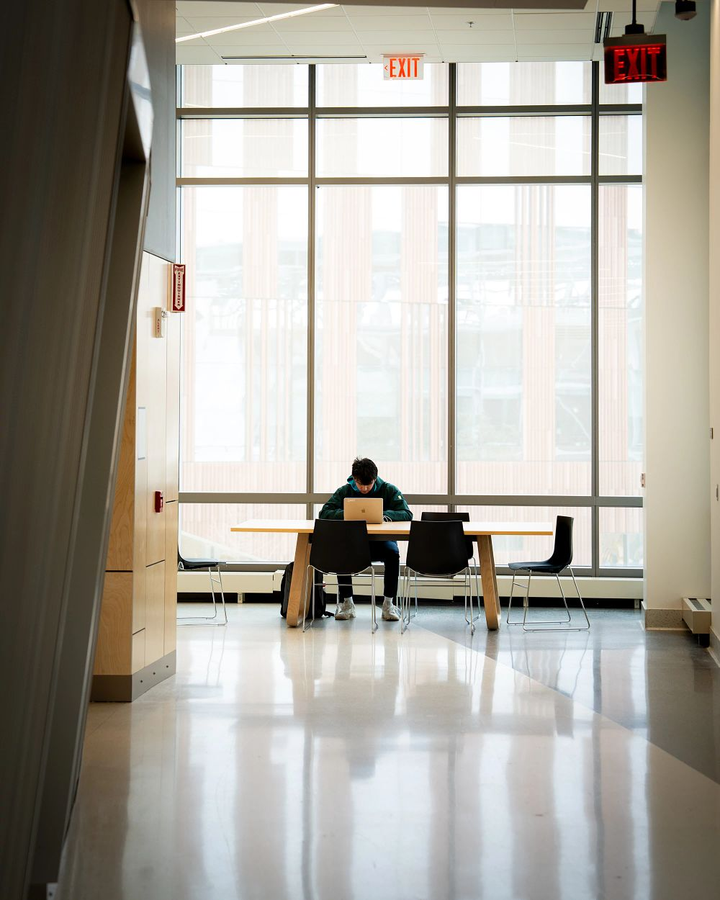

CAPS Commitment to Clinical Research
CAPS is committed to clinical research projects that contribute to knowledge about mental health issues faced by the diverse student population at U of M from all around the globe. We believe that scientific research informs clinical practice and vice-versa. By focusing efforts on research, we hope to stay on top of cutting-edge advancements in the field of college student mental health.
U of M College Student Mental Health Survey Phase V
Since 2004, Counseling and Psychological Services (CAPS) has conducted the College Student Mental Health Survey (CSMHS) every 2-3 years to better understand mental health experiences of UM students.
Guidelines for Conducting Research at CAPS
CAPS is committed to supporting clinical research that advances knowledge and service in mental health while adhering to its foremost mission in serving the best interests of clients. For researchers interested in conducting research at CAPS, the guidelines indicated below need to be followed. Criteria for evaluating proposals are also provided.
Center for Collegiate Mental Health Report
The Center for Collegiate Mental Health (CCMH), founded by and housed at Penn State’s Counseling and Psychological Services, released its sixth annual report, which describes more than 100,000 college students seeking mental health treatment at 140 colleges and universities.
U of M College Student Mental Health Survey Phase IV
Since 2004, Counseling and Psychological Services (CAPS) has conducted the College Student Mental Health Survey (CSMHS) every 2-3 years to better understand mental health experiences of UM students.
U of M College Student Mental Health Survey - Phase III
Mental health issues on college and university campuses continue to generate increased attention across the country. The University of Michigan College Student Mental Health Survey (CSMHS) was undertaken as one step toward gaining a better understanding of the broad range of mental health issues that face the college student population.
U of M College Student Mental Health Survey - Phase II
College student mental health research continues to move beyond assumptions and anecdotes toward a sophisticated understanding of the complexity and severity of issues faced by today's students.
U of M College Student Mental Health Survey - Phase I
Mental health issues on college and university campuses have gained increased attention over the past decade across the country. The University of Michigan College Student Mental Health Survey (CSMHS) was undertaken as a first step towards gaining a better understanding of the broad range of mental health issues that face the college student population.
Center for Collegiate Mental Health
The 2011 Annual Report of CCMH summarizes the first academic year of data (2010-2011) pooled through our new international data infrastructure.
Healthy Minds Study
This study is an annual national survey of college students about mental health, help-seeking behavior, and related issues. This national survey is the product of a partnership between the University of Michigan School of Public Health, the multidisciplinary University of Michigan Comprehensive Depression Center, and Survey Sciences Group, LLC in Ann Arbor, MI.